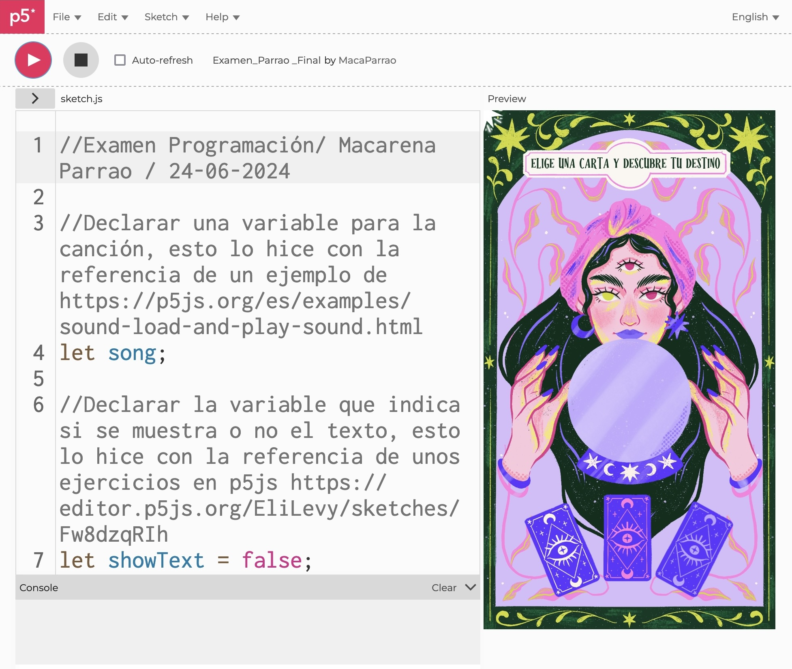
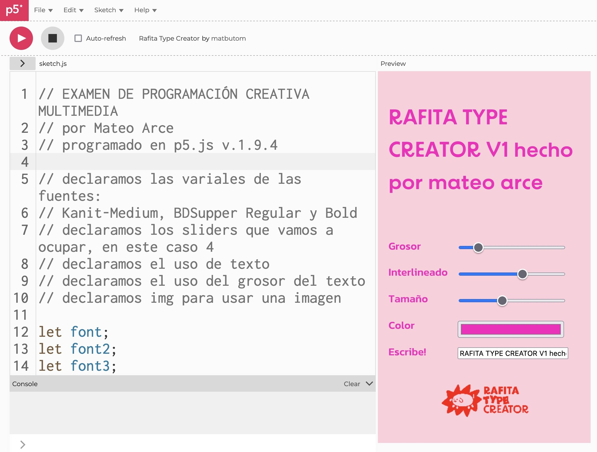
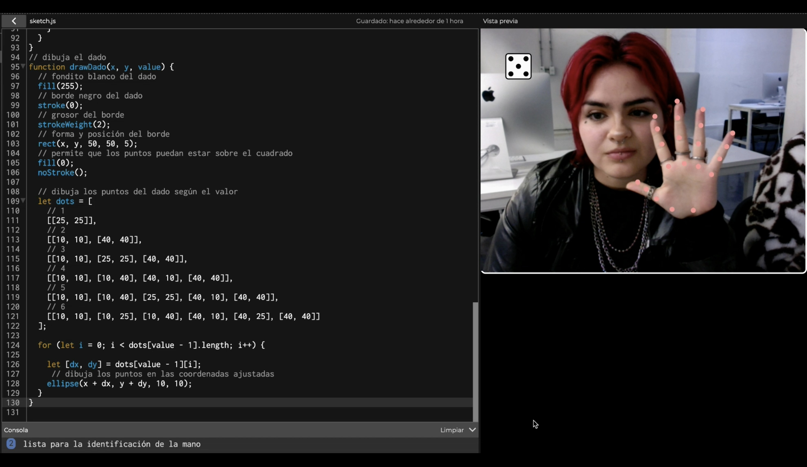

universidad diego portalesuniversidad diego portales
facultad de arquitectura, arte y diseñofaculty of architecture, arts, and design
escuela de diseñodesign school
primer semestre 2024 (marzo - julio)first term 2024 (march - july)
curso teórico-práctico, centrado en el uso y creación de software como un medio plástico para el diseño.theoretical and practical course, centered in the use and creation of software as a plastic medium for design.
aprenderemos los bloques fundamentales de la programación (variables, funciones, iteraciones, condicionales) y los aplicaremos a los elementos fundamentales de creación audiovisual, incluyendo color, video y audio, para componer obras tanto estáticas como dinámicas.we will learn the fundamental programming blocks (variables, functions, iterations, conditions) and we will apply them to the foundations of audiovisual creation, including color, video and audio, in order to create static and dynamic works.
el trabajo se hace de forma pública, compartida, y con un fuerte énfasis en herramientas de fuente abierta, libres y multi plataforma.all the work will be done in public, collaboratively, and with a strong emphasis on open source, free and multiplatform tools.
aarón montoya-moraga: profesore, creadora del cursoprofessor, course creator
janis sepúlveda: ayudanteteaching assistant